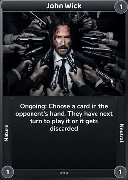
John Wick
Peak-human assassin, elite skill, iron will, no powers
The Official Lore
Project Convergence · The Convergence Field
“The most dangerous thing in any universe isn't a god, or a weapon, or a black hole. It's a brilliant mind with nothing left to do.” Found carved into the hull of an unidentified spacecraft, origin unknown
It was a Tuesday when Rick Gramps decided to break the universe.
Not metaphorically. Not emotionally. Literally, structurally, fundamentally break it — crack the Central Finite Curve like an eggshell and reach his fingers into the warm yolk of everything beyond.
The reason was embarrassingly mundane.
He was bored.
Not the boredom of an idle afternoon, or a slow weekend, or even a long winter. This was the boredom of a man who had lived for four thousand, three hundred and sixteen years, who had mapped every galaxy worth mapping, solved every equation worth solving, outsmarted every being worth outsmarting — and had, sometime around the three-thousand year mark, run completely, catastrophically, and perhaps permanently out of things to do.
He sat in his chair — a magnificent chair, engineered to provide precisely the optimal pressure distribution for a body that had been augmented, rebuilt, cloned, and reconstructed so many times it was technically a philosophical question whether the original Rick was still in there at all — and he stared at the stars.
The stars stared back, indifferent.
“Boring,” he said, to no one.
He poured a drink. He drank it. He poured another.
Somewhere in a universe he'd visited forty years ago and never bothered to revisit, a civilization he'd once helped was probably still flourishing, naming things after him, building statues, telling their children stories. He felt nothing about this. The statues were probably ugly. The stories were probably wrong.
He pulled up his list. The List. Four thousand years of accumulated ambitions, projects, dreams, and half-formed ideas, maintained obsessively in a personal database that had survived seventeen near-death experiences, two timeline collapses, and one incident with a rogue AI he didn't like to think about.
He scrolled.
Rick Gramps had never beaten him. Not once. In four thousand years, across every dimension of competition — scientific, philosophical, strategic, moral, immoral — C-137 had always, always, been marginally ahead. Not by much. Never by much. But always ahead.
The margin had narrowed over the centuries as Rick Gramps grew, learned, and evolved. But narrow wasn't zero. And zero was the only number that mattered.
He read the entry again. And again. He set down his drink.
For the first time in roughly six hundred years, Rick Gramps smiled.
To understand what Rick Gramps built, you must first understand what Rick Gramps was.
He was not, despite popular misconception among the few beings who knew of his existence, simply “an old Rick.” Being an old Rick was the least interesting thing about him, the way that being tall was the least interesting thing about a mountain. The mountain's height was real and measurable, but it told you nothing about the fault lines beneath it, nothing about the fossils buried inside it, nothing about the particular way it caught the morning light and made it look, for just a moment, like something sacred.
Rick Gramps had been born — first born, original birth — in a universe that no longer existed. He had outlived his home reality through a combination of extraordinary foresight, extraordinary cowardice, and an experimental backup consciousness device he'd built at age thirty-seven and which he still wasn't sure was entirely ethical. He remembered that universe, sometimes, in the way you remember a smell from childhood — not with clarity, but with a physical sensation, something below language.
He had spent his first century mourning it. He had spent his second century angry about it. He had spent his third century working, building, inventing, consuming knowledge with the hunger of a man trying to fill a hole that had no bottom.
Somewhere around his fourth century, he had accepted, with the weary pragmatism that was the hallmark of all long-lived Ricks, that the hole didn't have a bottom. That the hole was simply a feature of his architecture now. That you learned to carry it.
What made Rick Gramps distinctive — what separated him from C-137, from Rick Prime, from every other variant in the infinite diaspora of Ricks across the Curve — was not raw intelligence. On pure IQ, on raw computational and scientific output, C-137 was genuinely ahead. Rick Gramps had accepted this, painfully, definitively, after the four hundredth rigorous self-assessment.
What Rick Gramps had instead was time.
Four thousand years of it. Of watching civilizations rise and collapse. Of seeing which brilliant ideas survived contact with reality and which shattered on impact. Of learning, over and over and over, the single lesson that no young genius ever believed until they had lived it: that the most complex systems — the ones that produced the most extraordinary outcomes — were never the ones you designed perfectly. They were the ones you released, and then watched, and then tried desperately to understand after the fact.
Chaos, properly seeded, was more creative than any mind in any universe. Including his.
This was the philosophical foundation of Project Convergence. Not entertainment. Not cruelty. Not even, at its deepest level, the desire to answer the question of who was strongest.
It was an experiment in emergence.
He wanted to see what happened when you put the universe's most extraordinary individuals — people who had, each in their own reality, fundamentally broken the rules of what was supposed to be possible — into a single space together. What alliances they formed. What philosophies survived. What new things they created or destroyed or became. He wanted to see what happened at the collision point of limit-breakers.
He also, if he was being completely honest with himself, which he tried to be at least once per century, wanted to not be bored anymore.
The criteria for admission to the Convergence were precise, non-negotiable, and took Rick Gramps approximately sixty years to finalize.
The wrong candidates would produce boring outcomes. Too many pure warriors and you got a battle royale — entertaining for twenty minutes, meaningless after that. Too many schemers and you got a cold war — fascinating for a century, then stagnant. The mix had to be right. The chemistry had to produce reactions, not just heat.
He built a scanning apparatus of unprecedented scale — a device that stretched across seventeen dimensions, capable of reaching beyond the Central Finite Curve into the wild, uncharted universes where intelligence had never been selected as the dominant force. Universes of pure magic. Universes of technology so advanced it had become indistinguishable from nature. Universes governed by forces that had no name in any language he spoke.
His scanning criteria, distilled after decades of refinement, were elegantly simple:
The being must have broken their universe's ceiling.
Not merely excelled within it. Not merely risen to the top of an existing hierarchy. Broken it. Gone beyond what the rules of their reality said was possible. Fought death and won. Exceeded every measurable limit. Become something that their universe's architects — whatever form those architects took — had not anticipated and could not fully account for.
The scanning took another forty years. The list grew slowly, then rapidly. He was, repeatedly, surprised. A one-punch man in a world of heroes and monsters who had accidentally transcended the very concept of opposition. A high-school student holding a notebook capable of killing gods. A child sorcerer whose “Infinity” had conquered the mathematical concept of space itself. A pirate whose laughter bent the properties of reality. A boy from a village who carried a universe inside him.
He was occasionally baffled. A man whose power was simply refusing to stop. Another whose strength derived from, as far as Rick Gramps' instruments could determine, love, in the most cosmically literal sense.
He noted, without surprise, that the Greats were distributed unevenly across alignments. More heroes than villains. More neutrals than either. The neutral ones interested him most — the ones who had surpassed morality as a framework entirely, for whom Good and Evil were coordinates on a map they no longer needed. He did not select based on alignment. He selected based on the breaking of ceilings.
There were three candidates he spent the most time deliberating over.
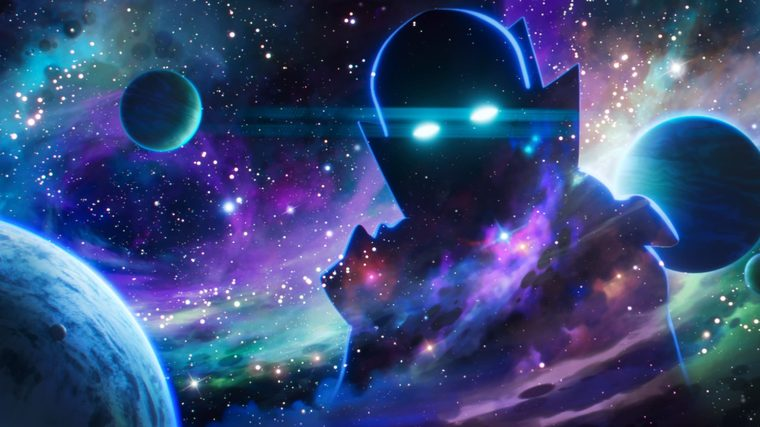
Deliberation · Seven Years
An entity whose entire existence is observation — sworn to an oath of non-interference, honored flawlessly.
Bringing him to the Convergence would violate that oath by proxy. Rick Gramps included him anyway, with a note: His non-interference will itself be a variable. What does the Watcher do when he cannot escape the thing he is watching?
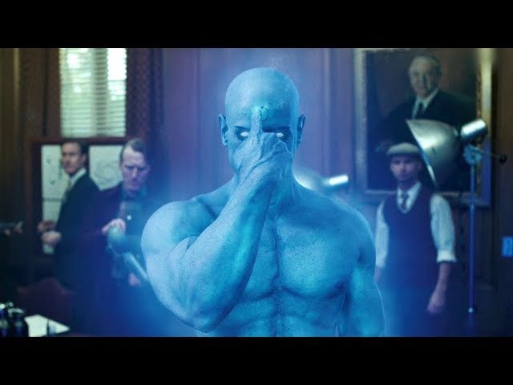
Four Hundred Simulations
A being who has transcended time entirely — past, present, and future experienced at once.
In 392 of 400 simulations he identified the architect within six hours. In the other 8 he simply phased through the dimensional barriers like tissue paper. Rick Gramps spent a decade reinforcing them. He is the most interesting variable. The most interesting variables are the most dangerous.
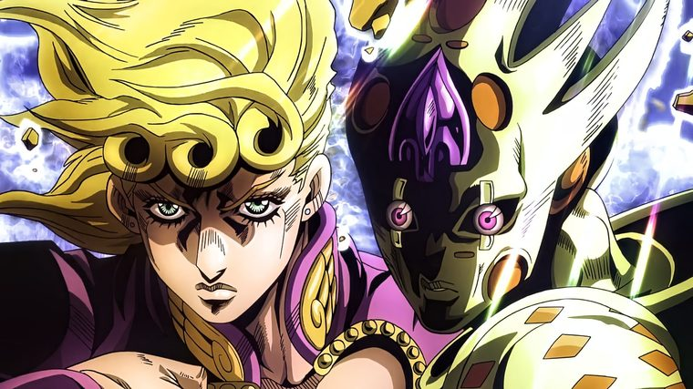
Gold Experience Requiem
An ability that reduces all causality to zero. An infinite death loop. Reality itself, subject to a teenager's will.
The instruments struggled to measure him — GER negated their results as soon as they were produced. Rick Gramps put him on the list, took him off, put him back. If any single being could unravel the Convergence entirely, it's this one. That's exactly why he has to be here.
The total count, when the Selection was complete, was one hundred and eighty Greats, drawn from across more universes than Rick Gramps cared to precisely count.
He looked at the list for a long time. Then he began to build their world.
The galaxy he chose was unremarkable by design. Far from any inhabited system, past the Finite Curve's edge, in a region of space that showed up on no map worth consulting. He selected it specifically because it was boring — a single yellow star, three dead rocky planets, two gas giants, a sparse asteroid belt.
He spent eighty years making it less boring.
He gave the third planet an atmosphere — relocated wholesale from a dying world he'd catalogued a thousand years ago. Oceans, sourced from a comet cluster he'd tracked since his five-hundredth year. Land masses sculpted by gravitational manipulation. And he gave it history: ruins of civilizations that had never existed, fossils of creatures that had never lived, billions of years of events compressed into fourteen months of real time — not to deceive the Greats, but to give them an anchor.
He named it, privately, the Convergence Field. In his notes he called it simply: the stage. He built it with seven distinct zones.
A continent-spanning metropolitan ruin — Tokyo streets bleeding into Gotham alleyways bleeding into fantasy castle districts. Cover, resources, familiar geometry. The most comfortable ground for beings who lived among civilization.
A continent of impossible ecology — megafauna without predators, flora growing in real-time, weather that changes by the hour. Where Kaido would find cliffs worthy of him and the Elder Centipede could carve its tunnels.
An ocean of black water that reflects no light. Its depths have never been measured — not even by Rick Gramps' instruments. He isn't entirely sure what he created when he copied it. Some things are more interesting left mysterious.
A mountain range of volcanic black glass breaching the thermosphere. Where the highest-powered reality benders gather — instinctively drawn to altitude, to perspective, to being above things.
A single structure at the exact center of the largest continent. Colonnades, vaulted ceilings, texts in languages that don't exist. Some information real, some fabricated. He did not label which. He was curious whether the Greats could tell.
A region the size of a small country where all powers — magical, technological, physical — function at exactly 40% capacity. A control variable. Would they avoid it? Use it? Fight over it? His models were evenly split.
A small island shaped like an eye, reachable only by air, with a single lighthouse built for no navigational reason — just because he'd once found one beautiful. The only place where the dimensional barriers are intentionally thin. Not enough to escape through. But enough to feel, if you're sensitive enough, that something lies beyond. He built it as a lure. He was curious who would find it first.
The final element he built into Battleworld was the hardest, and had taken thirty years of dedicated engineering to perfect.
Operating below the substrate of causality
A fundamental law, applicable only within this galaxy, that states, in effect:
It held against Tesseract-class teleportation. Against quantum tunneling. Against time travel — any timeline spawned within the bounds resolved back to the same coordinates. Against reality rewriting — any attempt to rewrite the rule simply reinstated it with new safeguards, like an immune system answering an infection. The Cage had exactly one exit: a single door Rick Gramps held the key to. He had built himself into the experiment as its only escape route. Whether this was brilliant or profoundly stupid, he hadn't decided.
On the day of the Convergence, Rick Gramps poured himself the best drink he owned — a bottle he'd been saving for a thousand years, from a vineyard in a universe that no longer existed, the last bottle of its kind in all of creation — and he pulled the lever.
It wasn't actually a lever. The mechanism was a twelve-dimensional resonance engine of terrifying complexity. But it had a lever, because Rick Gramps had decided that the most momentous events in his life should have levers, and after four thousand years he'd earned the right to engineer his own dramatic moments.
He pulled it.
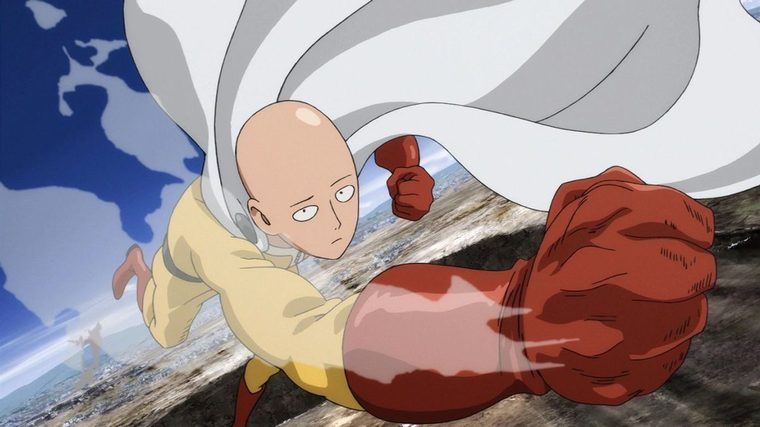
The Shattered City
He was grocery shopping — studying a sale on crab — when the store evaporated.
He stood in the alien light, bags still in his hands, empty now, whatever had been in them apparently hadn't made the trip. He set the bags down neatly against a wall that had not existed thirty seconds ago. He began to walk.
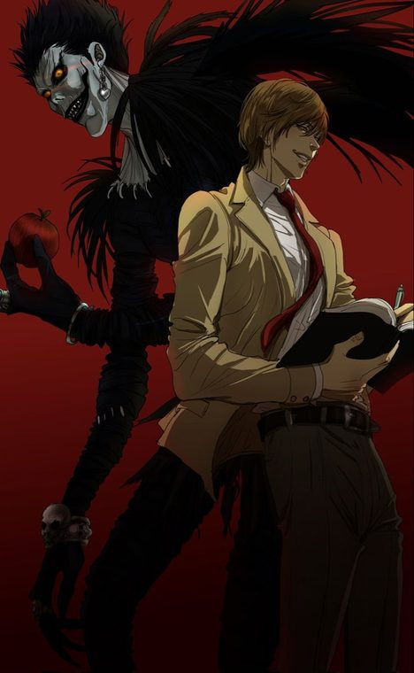
Cobblestones · A Dead City
His desk vanished. His notebook did not.
The star was wrong. The gravity, fractionally wrong — lower mass, which meant artificial construction was possible, which meant someone built this. Someone chose this. Someone chose him. Ryuk materialized, grinning. “Interesting.” “Someone's watching,” said Light. “Find them.”
Doctor Manhattan had not been surprised. He was, structurally, incapable of it — he had experienced this moment already, six times in sequence, and had known it was coming since somewhere around what humans would call Tuesday. He arrived with the calm of a man stepping off a familiar bus, high in the Obsidian Peaks, and looked for the exit.
He found it immediately — the thin membrane over the Cradle. He also found, immediately, that it wasn't enough. He could perceive the Cage's architecture. He could not break it: breaking it required rewriting a law of physics, and that law had been written to rewrite itself faster than he could. Whoever built this was not stupid. He began walking toward a convergence point he had already seen — a meeting, in the ruins, eight days away. He'd been there already, in one sense. He went anyway.
Within forty-eight hours of the Summoning, five beings had independently and correctly concluded that they were inside an artificial construct, that their summoner was still present and observing, and that finding him was the priority above all others. They had not yet coordinated with each other. They would.
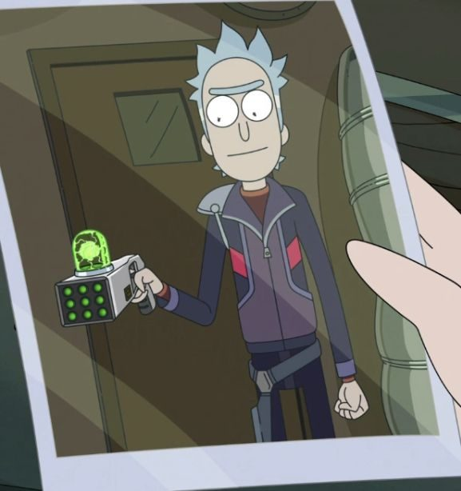
Six Locks On The Door
He recognized the architecture first — not the physical build, but the philosophy of it.
This was Rick work. The fingerprints were unmistakable, and it wasn't C-137 — too clean, too patient. An old Rick. Very old. He wrote in a manufactured notebook: He built the stage because he wanted a show. The question isn't what he wants to see. The question is what he wants to understand. Find that, and you find him.
The Watcher arrived and immediately felt the weight of violation. His oath was simple and absolute: observe, never interfere. But he had not chosen to come here. He had been taken. His presence was itself an interference in his non-interference — someone had made a decision about him, for him, that he had not sanctioned.
He saw everything, as he always did. All one hundred and eighty Greats. The teams forming. And he saw, precisely, where Rick Gramps' ship was. The triple-cloaking was impressive. It was not impressive enough to fool him. And for the first time in his existence, he did not know what to do. His oath said: do not interfere. But he had been interfered with. Was inaction now the interference?
He decided, after long consideration, to watch. But he began, for the first time, keeping a private record. Not for the archive. For himself.
Day 1. There are one hundred and eighty of them. The architect watches from above. None have found him yet.
Day 1. I have found him.
Day 1. I have said nothing.
The Watcher was not the only one. Doctor Manhattan had located the ship on Day 3 — not by any detection method, but by looking seventeen days forward, finding a moment where the ship became briefly visible, and tracing it backward to a location. He did not go. He sat cross-legged on a peak and thought about whether going was the right action. He had time. He experienced it differently from the others. He watched the first death happen again in his mind — a confrontation on Day 11 — and felt the particular weight of a sorrow that ordinary sorrow didn't quite capture. He decided he would go to the ship, eventually. But first he wanted to see if any of the others got there first. There was something in the linearity of their pursuit that he found, despite everything, beautiful.
Not everyone was hunting the architect. Most of the Greats were operating on simpler concerns: survival, orientation, and the fundamental question of who could be trusted. Trust, in the Convergence Field, was a currency more valuable than power. Everyone had power. Not everyone could be trusted.
The factions that formed were not the ones Rick Gramps had predicted. He'd expected alignment-based clustering — Good with Good, Evil with Evil. What happened was more interesting.
The Shattered City Coalition formed first — not around alignment, but around pragmatics.
Light Yagami circled it, observing, having used the Death Note twice in the first week — not to kill, but to test. A near-miss, close enough to trigger fear, to see how a target reacted. He was mapping personalities, not bodies. Aizawa had established a defensive perimeter within a day; other heroes gravitated to him, not because he was the most powerful but because he was the most organized. Kento Nanami helped. Stain looked at Aizawa, decided he was worthy, and stayed without being asked.
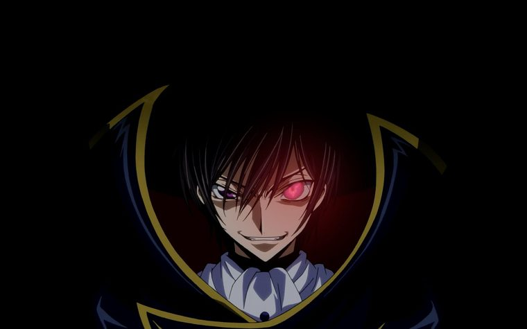
Used His Geass Once. Once Was Enough.
He wasn't pretending to be in charge. He was simply behaving as though he were.
Within four days he'd turned a corner of the Shattered City into something resembling a court — with such absolute conviction that people had started behaving as though he were in charge too.
Thanos arrived in the Coalition's territory on Day 6 and everyone went very quiet. He had no interest in the city, or factions. He looked at the assembled Greats with the calm of a man reviewing an itemized list. “Someone brought us here for a reason. Finding that reason is the only thing that matters.” He left without incident, walking north toward the Wilds. Lelouch watched him go. “He's right,” he said quietly, to Nanami, who was already aware.
The Obsidian Parliament — a congregation of beings powerful enough to recognize that factional politics were beneath them.
The Watcher observed. Doctor Manhattan sat in a cross-legged position he had not moved from in four days.
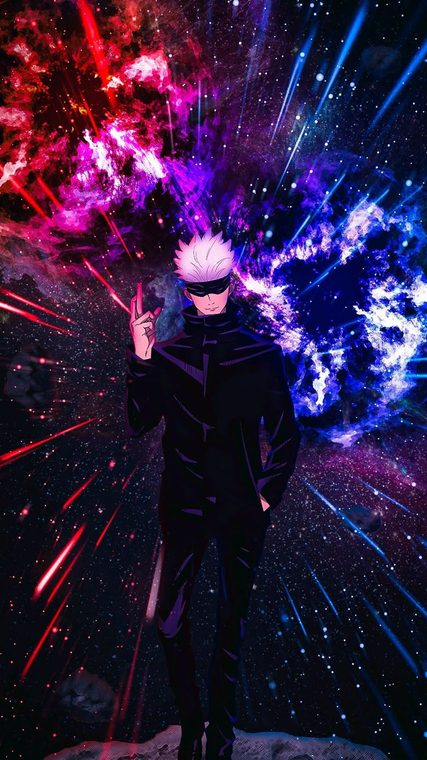
“Huh, Interesting Crowd.”
His chatter was, underneath its casual surface, extraordinarily precise.
He was reasoning aloud, using conversation as a tool for thinking. By Day 6, the Watcher — despite himself — had begun responding.
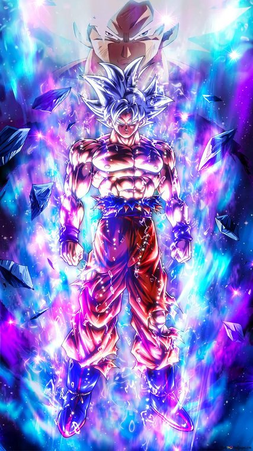
The Obsidian Parliament
He arrived, sat next to Gojo, and asked if anyone had eaten.
No one had. He seemed genuinely surprised, went looking, returned with something that resembled food, ate it contentedly, and asked Manhattan if he wanted to spar. “I have already seen how that ends,” said Manhattan. Goku grinned. “But it hasn't happened yet.” Manhattan looked at him with something that was not quite surprise. “That is an interesting response.” “I just like fighting.”
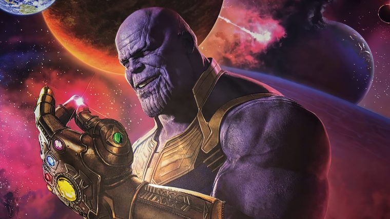
Gravity Works On Philosophy Like It Works On Mass
He walked to the highest cliff and stood at its edge for an entire day, doing nothing except thinking with the totality of his focus.
Kaido found him there. They looked at each other. No words. Kaido sat twenty meters away and looked at the same horizon. By Day 5 there were eleven beings within a kilometer of that cliff, all engaged in the same meditative observation.
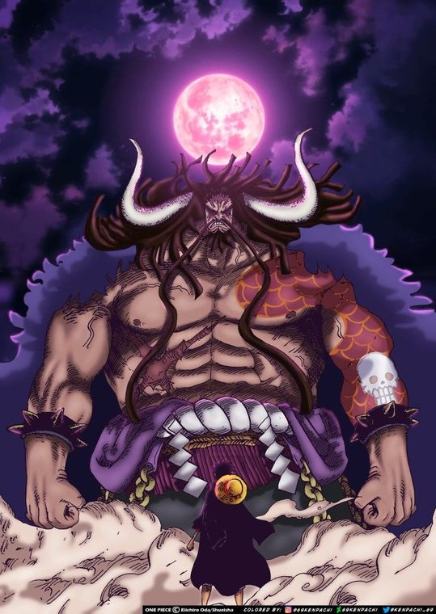
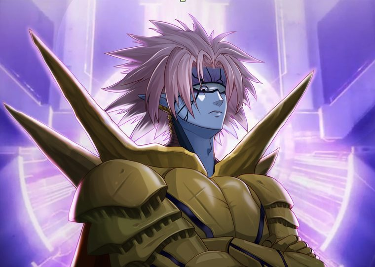
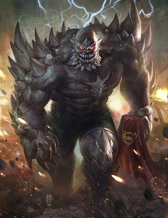
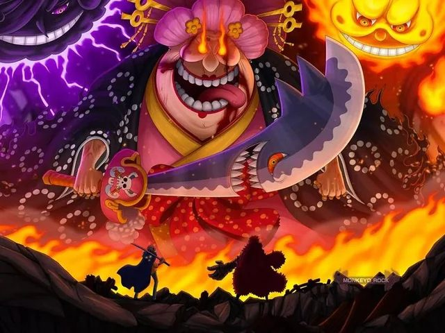
Thanos had said, on Day 3, a single thing:
“There are two possibilities. One: whoever brought us here wants to see us fight. Two: whoever brought us here wants to see what we do when we decide not to. I am curious which they find more interesting.”
This was, Rick Gramps reflected, a remarkably accurate model of his own psychology. He found this mildly alarming and wrote it down.
Rick Gramps' ship existed in seventeen dimensions simultaneously. Its physical component — the part that cast a shadow — was present in normal space only as a probability distribution, smeared across roughly ten thousand cubic kilometers at any given moment. The triple-cloaking operated in layers.
The actual Rick Gramps sat in the stern, watching feeds from two hundred and thirty-seven drones. He watched Light Yagami stare at the sky and smiled — the quality of his suspicion was exactly what he'd hoped for. He watched the Watcher standing in the peaks and wrote in his log about the being who had found his ship and chosen, for reasons Rick Gramps couldn't fully penetrate, to say nothing.
On Day 9, something happened that he had not predicted and had not seen in any of his four hundred models.
It lasted eleven seconds. Neither landed a hit. They stopped by mutual unspoken agreement, looked at each other, and then, simultaneously, laughed — Manhattan producing a sound the records indicated he had never produced before. A genuine, startled, delighted sound.
Goku: “What are you?” Not hostile. Genuinely curious.
Manhattan: “I am not sure.” Which was also something he had never said before. “What are you?”
Goku: “Goku.” As if this were a complete and satisfying answer.
Manhattan: “Yes. I think that might be right.”
I didn't model this. In four hundred simulations, I did not model this.
This is why I built it.
This. Exactly this.
On Day 17, three things happened. First: Rick Prime found the ship — not through technology, but through four hundred and seventy-three hours of working backward through every observable fact until he'd triangulated the orbital range any rational Rick would use. Then he built a detector for the specific quantum signature Rick-built technology produces even through cloaking. And he sent a transmission on a frequency he was reasonably confident the other Rick monitored.
I know you're there. I know roughly where. I'll find exactly where within a week.
You have something I want. Not the exit — I don't want to leave yet. I want to know why you picked me.
You know what I am. You know my history. You know C-137. I'm not a hero. I'm not even a villain in any straightforward sense. Why am I on your list of Greats?
— RP
Rick Gramps read the message. He sat with it a long time. He wrote a response and deleted it. He wrote another. He deleted that too. He wrote a third, which he also deleted, but which said, honestly and simply:
Because you survived something that should have destroyed you, and instead of being destroyed, you became more yourself. That's what I'm studying. How people become more themselves under unbearable pressure.
Second: the first Great died. Two beings with irreconcilable philosophies met in the ruins, and the meeting concluded in the only way it could. Doctor Manhattan had seen it coming. He had not prevented it. He arrived precisely on time at the edge of the aftermath and felt the weight of his non-intervention. Rick Gramps watched it on his feeds and felt something he hadn't expected: responsible. He poked at the feeling the way you'd poke at an unfamiliar object to determine if it was dangerous. He didn't do anything about it. But it changed the texture of his observation — something had become personal that he'd intended to keep clinical.
Third: the Watcher came to the ship. Not physically — a presence at the edge of the viewscreen, vast and quiet. The cloaking held; the decoy sat in the bow, reading. The Watcher looked at the decoy for a long moment. Then he looked directly at the stern camera — the one pointed at Rick Gramps' chair, the camera that should have been invisible to any external sensor. He looked directly at Rick Gramps.
I have watched everything in creation. Births, deaths, wars, the collapse of universes. I have never watched anything like this.
I want you to know that I have found you. I want you to know that I have chosen, for now, not to reveal your location. I want you to know that choice costs me something.
And I want you to know that I am going to keep watching — not because you trapped me here. Because I want to see how this ends.
But if you let another one die when you could prevent it, I will tell them all exactly where you are.
We understand each other.
Rick Gramps sat in his chair for a very long time. He poured a drink. He didn't drink it. He looked at his log — four thousand years of careful, meticulous, detached observation. He opened a new entry. He stared at the blank page.
I think I made a mistake.
Not the Convergence. Not the cage. Not the selection.
The mistake was thinking I was outside of it.
I'm not outside the experiment. I'm in it.
He closed the log. He looked at the feeds. One hundred and seventy-nine Greats, now. He thought about the wine he'd opened at the Summoning — the last thing from his home universe that still existed anywhere in creation. He picked up his drink. He finished it. He opened an encrypted channel to the one being with the intelligence to decrypt it, and he typed two words. He sent them to Rick Prime.
Personal Record — Day 31.
One hundred and seventy-nine of them, now. The one who died — I've reviewed the feed again. There was nothing to prevent. Or there was, and I chose not to, because preventing it would have meant revealing myself, and I wasn't ready. I haven't decided which is true. Maybe both.
C-137 would have prevented it. He would have found a way that didn't require revealing himself. He's better at this than I am. I've been thinking about that a lot lately. That I'm second. That I've always been second.
For three thousand years I thought that bothered me because of pride. Now I think it bothers me because somewhere, very deep, I believed it meant something true about my worth. That second place was a permanent condition. That nothing I built could close the margin.
I built this. One hundred and eighty Greats. A world from nothing. A cage that holds Manhattan. A mystery that has Light Yagami staring at the sky.
Goku made Manhattan laugh. I did not predict that. In my four hundred simulations, running on the most powerful processors in any universe within range, I did not predict the specific texture of what happens when Goku meets Manhattan. C-137 probably would have. But C-137 didn't build this. I did.
I have been thinking about what the Watcher said. About the cost of his choice. He watched the whole universe for eons and never found anything he wanted to see badly enough to risk his oath. Until now. Until me. Maybe that's something. Maybe that's enough.
I'm going to keep watching. I'm going to make sure no one else dies unnecessarily. I'm going to answer Rick Prime's question honestly, eventually, when the moment is right. And when this is over — if it ends, when it ends, if any of them figure out how to make me end it — I'm going to write it all down. Every alliance. Every death. Every moment like the Manhattan-Goku spar that none of my models predicted.
I'm going to write it all down, and I'm going to send it to C-137. Not to beat him. Not anymore. Just to show him what I found. What happens at the collision point of limit-breakers. What new things emerge. What I learned.
— Rick Gramps, The Convergence Field, Day 31
Rick Gramps watches every game. He is taking notes.
Designer's note. The events recorded in this lore correspond to the cards in your hand. Every game of Convergence is a fragment of the same story — a different day in the Field, a different constellation of Greats, a different set of choices.
What this does for the game. Rick Gramps is your mascot. He should appear somewhere on the physical materials — not as a playable card, but as the narrator figure. A small portrait in the corner of the board. His log entries as card-pack flavor.
The Convergence Field
All 183 characters and 34 relics, scored 0 to 10 across six powers. The hexagon is the character; the colour is their camp.

Peak-human assassin, elite skill, iron will, no powers
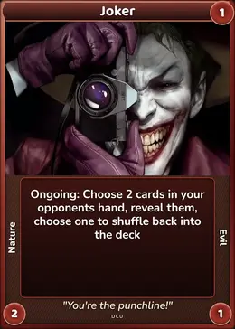
Mundane genius criminal mastermind, unshakeable psyche, no powers
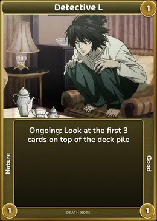
Peak-genius detective, Light's rival, mundane physically
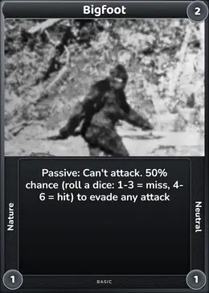
Folklore cryptid: strong, elusive ape
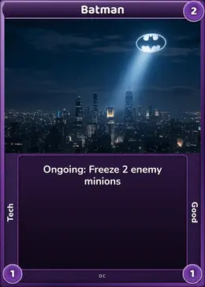
Peak-human genius detective and strategist, no powers
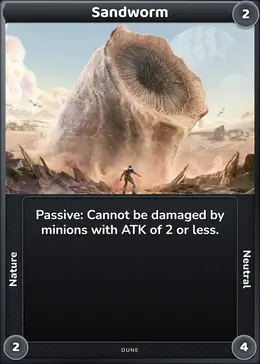
Colossal Shai-Hulud, near-unstoppable natural force, mindless
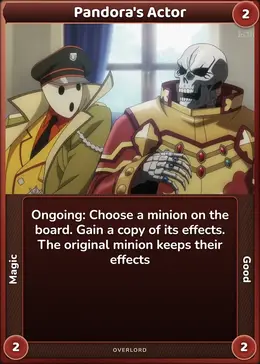
Doppelganger guardian; base form mimics most targets
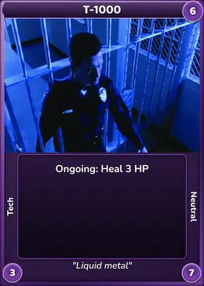
Liquid-metal hunter-killer, near-unkillable shapeshifter
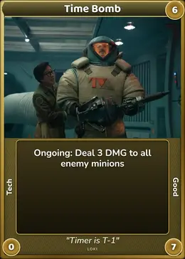
Reset-charge device that ruptured the Sacred Timeline
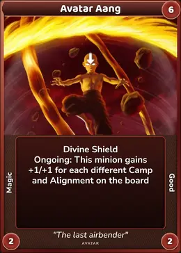
Avatar State, all four elements plus energybending
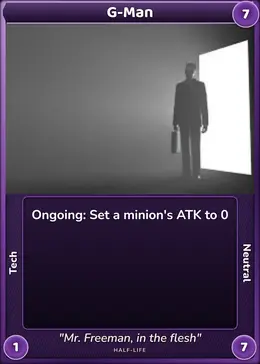
Enigmatic reality-bending overseer, power unconfirmed by design
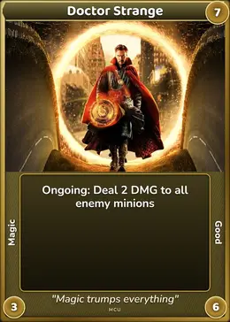
Sorcerer Supreme, multiversal magic, physically frail
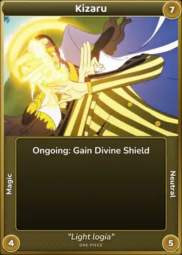
Admiral, light-logia; literal light-speed movement
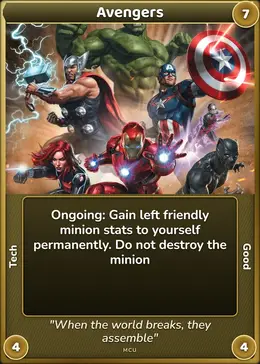
Peak MCU ensemble incl. Thor and Hulk, combined
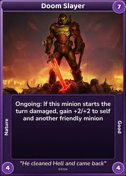
The Slayer, kills demon-gods, unstoppable rage
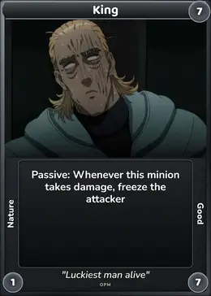
Pirate King; greatest Haki user and swordsman
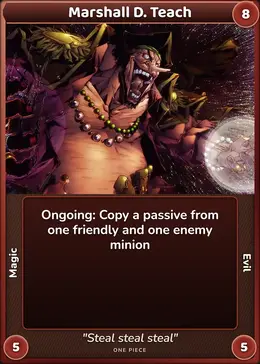
Yonko wielding two devil fruits, quake and darkness
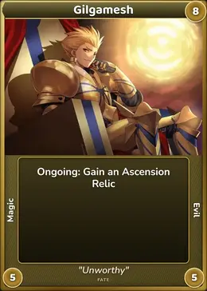
King of Heroes; Gate of Babylon and Ea
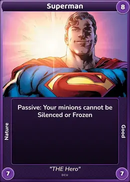
Classic Superman; alien might, not magic
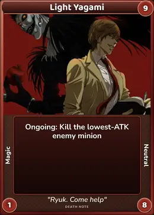
Death Note wielder; mundane body, godlike mind and will
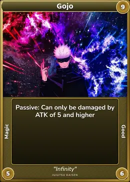
Strongest sorcerer; Limitless plus Six Eyes
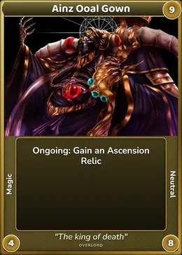
Max-level lich overlord, world-class caster
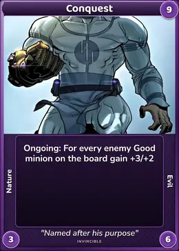
Elite Viltrumite warrior, brutal physical powerhouse
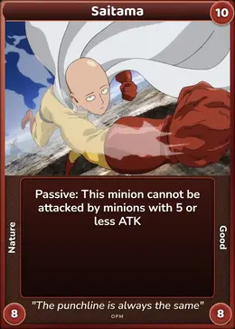
One Punch Man; zero magic, pure training
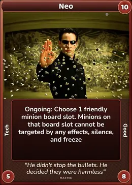
The One; peak reality mastery inside the Matrix
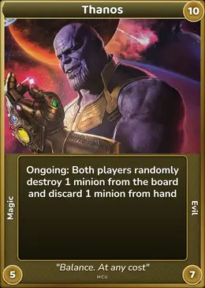
Full Infinity Gauntlet, near-omnipotent control
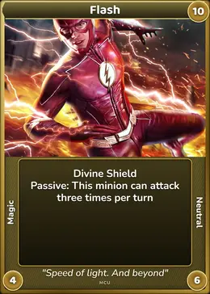
Premier speedster; Speed Force incarnate
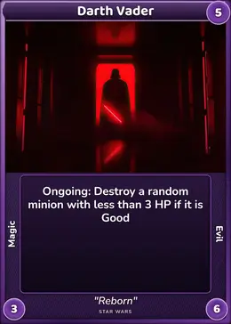
Cyborg Sith Lord, powerful but suit-limited
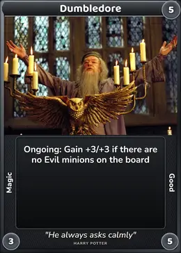
Most powerful wizard of his era, master strategist
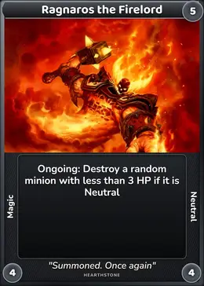
Elemental Lord of Fire, immense magic, slow
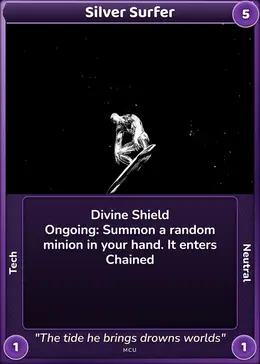
Power Cosmic herald, planet-scale energy, faster than light
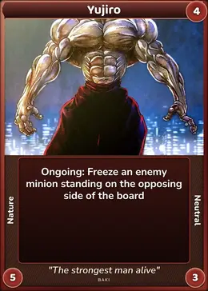
Strongest man alive, no powers, terrifying dominance
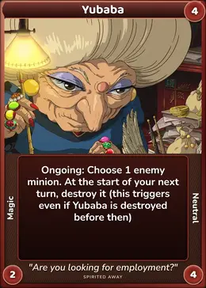
Bathhouse witch, transformation and contract magic
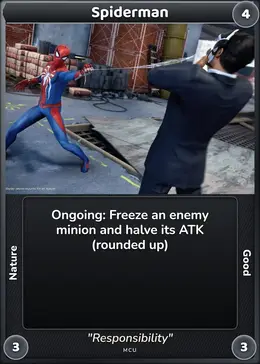
MCU Peter Parker, tech web-shooters, agile
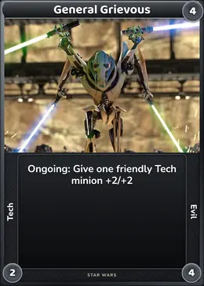
Cyborg general, four lightsabers, not Force-sensitive
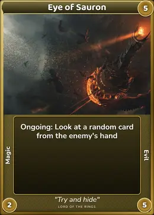
Bodiless Dark Lord, pure will and dread
God-tier; hurt and tanked Hajun in Ragnarok
Early Dragon-level threat, crumbles before top-tiers
Heavenly Restriction: no cursed energy, killed young Gojo
Reality-warping dream demon, dominant in the mindscape
Return-to-zero negates causality, near-unkillable
Near-omnipotent reality manipulator, the toughness and magic anchor
Peak Dragon Ball form; the strength and agility anchor
Smartest, coldest Rick; pure sci-fi tech, no powers
Omniscient cosmic observer, vast power rarely used
Noon peak briefly rivaled the Demon King
Geass plus peerless strategist; the intellect anchor
Rimuru's Guardian Lords, led by Diablo and Benimaru
Hogyoku-fused final form, tanked strongest Bankai
Dominator of the Universe; self-destruct threatened Earth
Dark Dimension ruler, near-omnipotent in his domain
Full psychic dam-break, city-scale telekinesis
Skilled human, unbreakable faith, no innate powers
Superweapon: one-shots a planet, thin-skinned to torpedoes
Adaptive regenerator, killed Superman once, mindless
Primordial biju fusion, casts world-altering illusions
Strongest creature, Yonko dragon, unbreakable will
Mach-20 teacher, near-unkillable, genius mind
Sun God awakening, fought Kaido to a standstill
Primordial void that spawned the gods, tests free will
Top hero team (Tatsumaki, Bang), excludes Saitama
Weakest stats, but perfect dodges and unblockable KARMA
Team peak: Escanor's Sunshine, Meliodas, Merlin
Strongest man; quake fruit nearly sank Marineford
Dragon-level kaiju, one-shot by Saitama
Sleep god; can put a whole realm to sleep
Capital warship, heavy turbolasers and armor
Martial arts god, self-destructed against Meruem
Team peak: Sin Devil Trigger Dante, empowered Vergil and Nero
Master villain, near-killed All Might, stolen quirks
Near-omnipotent wish magic, bound by its rules
Symbol of Peace at full power, fought AFO to a draw
Jedi Grandmaster, matched Dooku and Palpatine
Main titanium AI body, super-hacker
Kaiju king, atomic breath, near-unkillable regeneration

Ordinary man; his S-class rank is a lucky bluff
Angelic Maia reborn, defeated the Balrog, incorruptible
MIT physicist with gravity gun and HEV suit
Adapts to any attack, cut through Gojo's Infinity
Nazarick's demi-god guardians, Shalltear and Demiurge
Chimera Ant King, survived Netero's self-destruct
Iconic speedster, breaks the sound barrier in base form
Mid-high angel summon, casts Holy Smite
Controls all Titans, powers the world-trampling Rumbling
Compound-V supe, Superman-level, unstable narcissist
Slew the Greek and Norse pantheons
AFO's heir, empowered final-war form overwhelmed heroes
Demon King's elite squad, immense magic and durability
Lone alien saucer, modest sci-fi craft
Combat puppet mimicking history's strongest swordsman
Zen turtle grandmaster, near-omniscient chi mastery
Godslayer swordsman, zero-distance Tsubame Gaeshi
Vampire Stand user, The World halts time
Elder dragon tier, ancient Lands Between beast
Yonko emperor, soul-stealing fruit, city-busting Haki
Comet-boosted Phoenix King, ruthless conquering will
Carian sorcery queen, weak in melee
Legendary Servant team, reality-altering Noble Phantasms
Great mythical dragon, fire breath and flight
Military Fortified structure, static defenses
Genius homicidal AI, weak mobile combat body
Shockwave's Cybertronian drilling beast
Cybertronian robots, power varies by continuity
Phantom Troupe leader, steals any Nen ability
Resurrected legendary swordsman, bullet-cutting reflexes
Corps' strongest nine, felled Upper Moons
Dragon Warrior panda, kung fu plus chi
Genius scientist, four superhuman tentacle arms
Esper mastermind, telekinesis, illusions, mind control
Skilled Hunter, Crazy Slots random combat effects
Darkest wizard, horcrux immortality, Killing Curse
Eto Yoshimura, strongest ghoul, kakuja regeneration
Reality-warping mask, near-indestructible cartoon logic
Mountain-sized demon-clan golem, not sentient
Naval warship, heavy guns and armor
Self-mutated monster, overpowered multiple S-Class heroes
Marvel's first family, genius plus varied powers
Elite kung fu ensemble, peak martial skill, light chi
Mindless hell-wall boss, huge HP, laser barrage
Powerless Batman-analog, genius gadgeteer, hoverboard
Zodiac Hunter, pocket-dimension Room for teleport
Erasure-quirk hero, elite tactician, fragile frame
Dragon-level monster, devouring jaws, acid stomach
Dragon-level monster, blink-speed, fled from Saitama
Five death-row killers, poison and brute force
Superheated blue flames rivaled Endeavor
Weaker demigod, grafted dragon limbs, diluted blood
Zoldyck assassin, needle mind-control, ice discipline
Grade-1 sorcerer, Ratio technique, composed veteran
Steel-bodied Warlord cyborg, repels anything, paw-shock
Beat the Furious Five, obsessive drive, blistering speed
Nen hunter who lends aura and enforces mounting debt
Great Old One, induces madness, city-sized horror
Magical spawn-crystal, arcane source, immobile
Huge stationary tree, no attacks, scenery
Present-day tank, real-world firepower and armor
Bulletproof cyborg cop, human resolve, detective skills
Technology structure, moderate defenses, no combat
Top swordsman, Conqueror's Haki, cut a Yonko attack
Ordinary survivors, skilled shooters, dogged resolve
GDA director, unpowered, ruthless master strategist
Century-old kenpo grandmaster, frail body, deadly technique
Magus Killer, Origin Bullets, Time Alter, ruthless tactician
Ghoul investigator, quinque veteran, fanatical resolve
Warp-gate villain, misty body, tactical support
Mightiest human warrior, staggered Thor, split the sky
Chameleon Hunter, near-perfect invisibility enables kills
Muscle-armored strongman, blade-proof skin, healing
Unbending ideologue, fast blade, paralysis-blood quirk
Elite special-forces soldiers, tech-equipped, no powers
Lord Soul of Death, commands all undead, primordial
Demigod Omen King, rune magic, curses, teleports
Immortal swordsman, instant regeneration, blinding strikes
Ancient super-vampires, regenerate and absorb, Kars a genius
Absurdly tough scholar-adventurer, whip and wit
Household folklore spirit, foresight and shapeshifting
Soulless flower, manipulative genius, SAVE/LOAD abuse
Dying, immobile, yet his resolve alone terrifies Muzan
Multiverse-portal genius, a thousand variants' knowledge
Comedic inventor, working -inators, hapless non-combatant
Peak-human swordsmen duo, wild versus classical
Precognition foresees a day, brilliant strategist, frail
World's smartest scientist, cyborg body, non-combatant
Genius chemist-strategist, no combat, prideful will
Armored knight regiment, protected but slow
Cursed immortal captain, commands the Kraken, unkillable
Weak fantasy creatures, cowardly, numerous, quick
Comic relief, survived a gunshot, hints of hidden nature
Ultra-genius animal principal, master strategist
Frail aikido master, technique neutralizes brutes
Bio-enhanced revolutionary, master knife-fighter, unbreakable conviction
An impersonal event of speed and gravity
A patient guardian of a fragile world
A patient force of spacetime rather than a thinking being
A calculating reincarnate learning responsibility
An irrepressible royal scholar
A disciplined investigator of the human-machine boundary
A biological engine of sacrifice and relentless growth
A relentless leader who turns one fighter into a whole formation
A patient archivist whose power grows through knowledge
Gains attack and health as its core loses health
A risky finisher or deterrent
Suppresses opposing Tech attackers
An elusive symbol of grace and fulfillment
A personal weapon shaped by a demon captain's restraint
A beautiful object that makes possession a moral crisis
A cosmic artifact whose meaning depends on which force it contains
A badge of wonder, horror, and irreversible commitment
A secret legacy that turns fear into architecture
A speculative bridge between ritual and code
A king's relic that treats reality as an artifact
A legendary instrument whose power creates its own temptation
A dangerous shortcut from frustration to identity
A quiet answer to the fantasy of immortality
A creation myth in mechanical form
A symbol of restraint, memory, and borrowed identity
A gift whose freedom always carries a maritime cost
A humble symbol of preparation and mercy
A biological engine of hunger, hierarchy, and transformation
A forbidden shortcut through identity and death
A comic identity that makes inhibition physically disappear
A cosmic container mistaken for a manageable machine
A living maze shaped by a demon's instrument
A myth about blame, knowledge, and the survival of hope
A horror object built from regret and literal language
A holy object whose mystery resists possession
A book-shaped breach in the limits of human understanding
A journey object that makes hope a physical collection
A weapon that measures character before strength
A symbol of authority that outlives the person who carries it
A device of endless adaptation and imperfect control
A dangerous gamble that rewards those who endure transformation
A simple tool built around trust, timing, and return
A precise answer to damage that depends on remembering when it began
A dangerous partnership that converts survival into dependence
A quiet reset button for a battlefield full of lingering consequences
A tool that grows through patience, courage, and creative defence
The Influences
Every convergence has a bloodline. These are the fights that lit the fuse — the tone, the scale, and the sheer nerve Convergence is chasing.
Saber vs Lancer
Kiritsugu vs Kirei
Gon vs Neferpitou
Netero vs Meruem
Escanor vs Meliodas
Saitama vs Boros
Ainz vs Shalltear
Ainz vs Slane Theocracy
Baki vs Yujiro
Yujiro vs Orochi Doppo
Baki vs Pickle
Yujiro vs Kaku Kaioh
Kojiro vs Poseidon
The Original Roster
Not everyone in the bracket was pulled from another world. These are the homegrown challengers — powers still being forged in the workshop.
Future-Seeing 360° · Blindsight
The user can see the world without the use of their eyes. They can perceive their surroundings in 360°, in an X-ray, across an area of 50 meters in their mind’s eye. They can see through walls and any other objects. The user can also read another person’s body strength and injuries at a glance.
Sonic · Vibration · Spatial
The user can bend space, creating huge shockwaves. They can also create black holes and travel to a pocket dimension.
Convergence · The Official Lore · Return to the top ↑